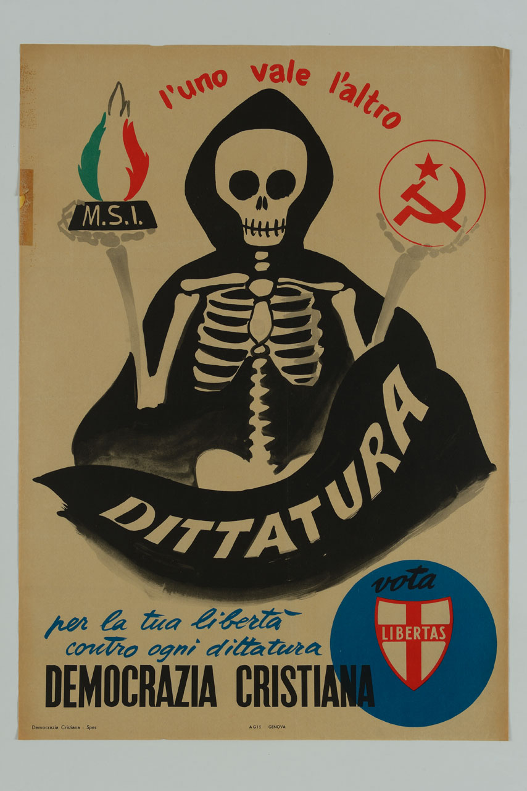
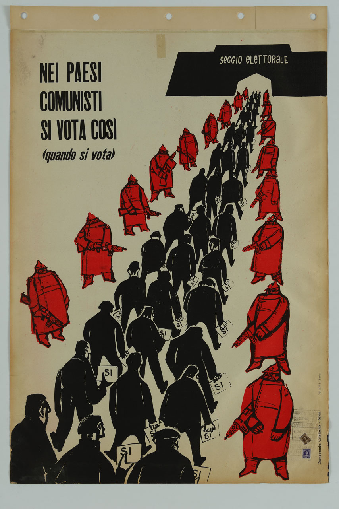

Catalogo/Lista/Partiti politici/Democrazia Cristiana
Introduzione: la Democrazia Cristiana è stato un partito politico italiano di ispirazione democratico-cristiana e moderata, fondato nel 1943 e attivo per quasi 51 anni, sino al 1994Wikipedia.
Nome completo: Democrazia CristianaVIAF
Abbreviazione: DCVIAF
Tipologia di ente: partito politico
Stato: Repubblica ItalianaTGN
Sede: Piazza del Gesù, 46 - RomaTGN
Fondazione: 19 marzo 1943
Dissoluzione: 18 gennaio 1994
Collocazione: CentroBNCF (con correnti dal centro-destraWikipedia al centro-sinistraWikipedia)
ID pagina Wikipedia: 1795258Wikipedia
Licenza metadati: CC BY-SA 4.0
-
Controllo d'autorità:
- 137215176VIAF
- 0000000122910193ISNI
- 494/7478BAV
- n79006461LCCN
- 291-4GND
- ark:/12148/cb13318407rBNF
-
Collegamenti esterni:
- Democrazia Cristianadcitalia
- Prima Repubblica (Italia)Wikipedia
Risorse catalogate correlate:


Nei paesi comunisti si vota così (quando si vota)
Creatore: Democrazia CristianaVIAF.
Tutti i metadati